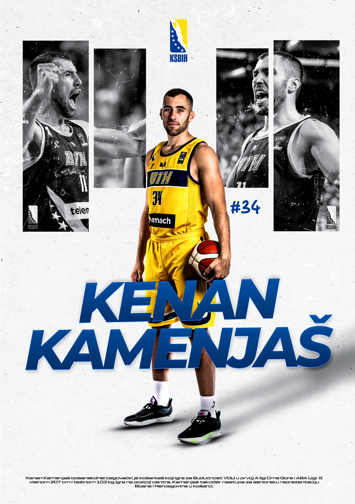
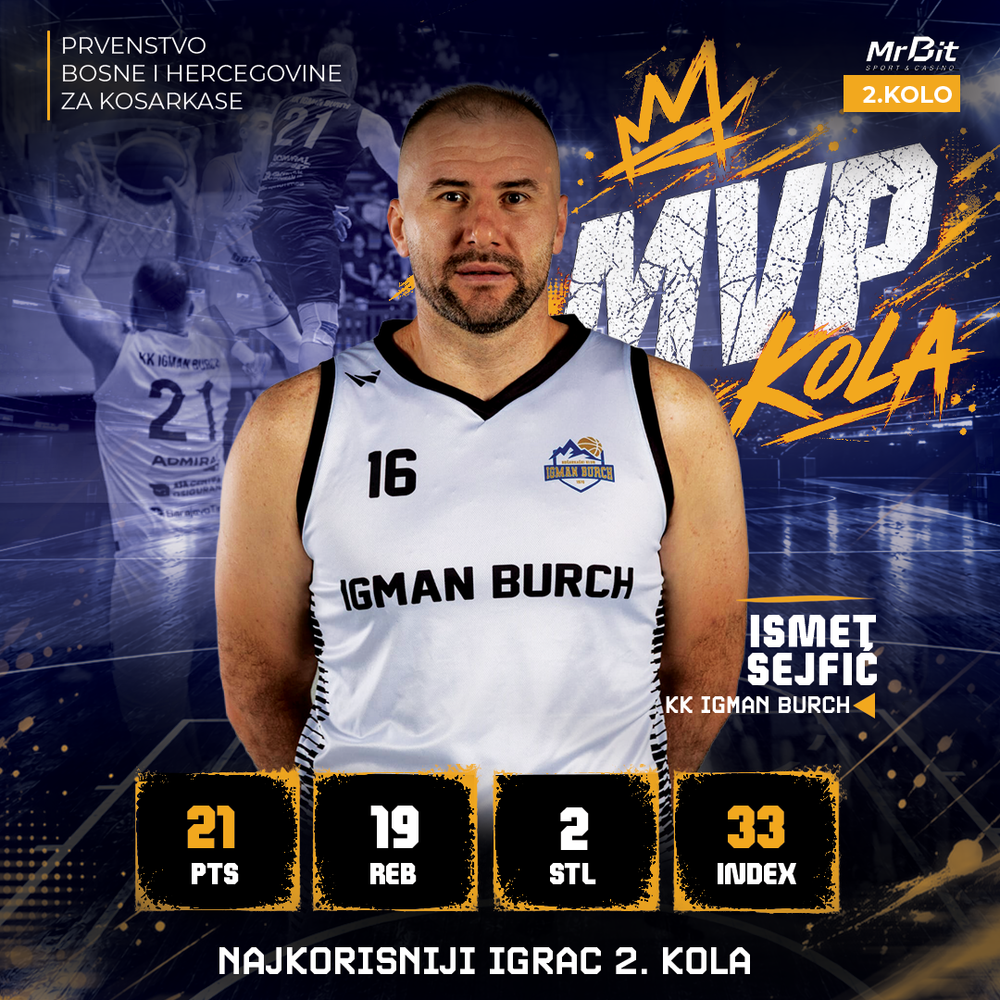
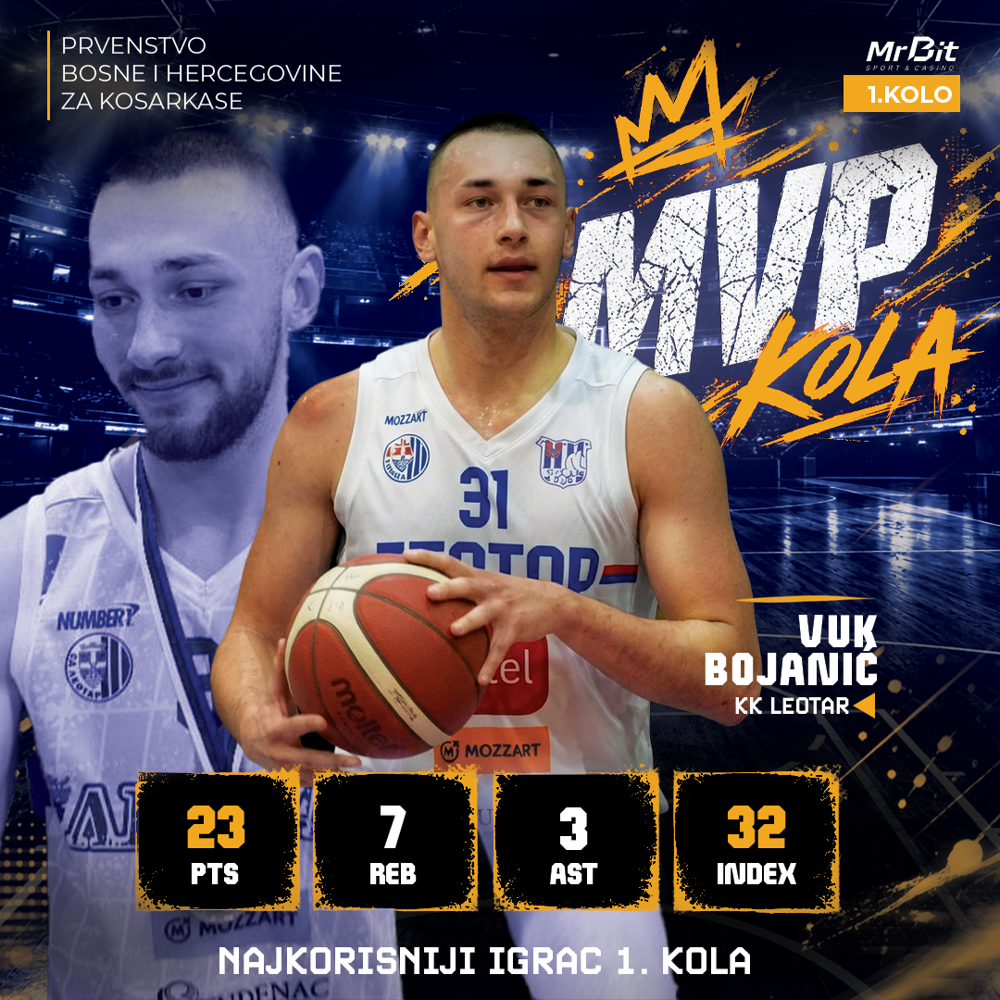

Graphic DesignGrafički dizajn
Sports GraphicsSportske grafike
A collection of sports graphics featuring basketball and football visuals. The designs include player statistics, Team of the Week selections, player announcements, and other team-related content. Bold typography, dynamic compositions, and clear information bring each design to life while highlighting players and celebrating team achievements. Kolekcija sportskih grafika koje obuhvataju košarku i fudbal. Radovi uključuju statistiku igrača, izbor najbolje petorke kola, najave novih igrača i druge sadržaje vezane za timove. Izražajna tipografija, dinamične kompozicije i pregledne informacije daju svakom dizajnu poseban karakter, ističući igrače i uspjehe timova.





